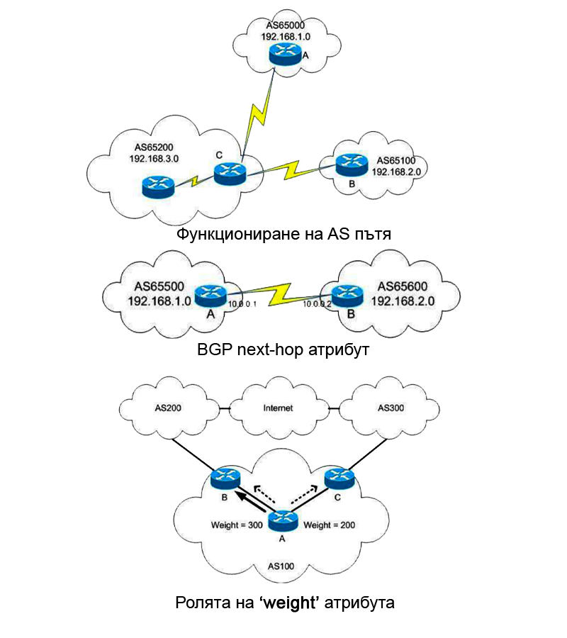

Протоколът BGP използва атрибути за път (path attributes), за да избере най-добрия път до мрежата на местоназначението. Атрибутите на траекторията попадат в четири категории:

Таблица 1 дава кодовете за тип атрибути, използвани от BGP протокола:
- Well-known mandatory (задължителен)
- Well-known discretionary (дискреционен)
- Optional transitive
- Optional non-transitive
- Well-known mandatory:
- AS-path
- Next hop
- Origin
- Well-known discretionary:
- Local preference
- Atomic aggregate
- Optional transitive:
- Aggregator
- Community
- Optional non-transitive:
- Multiexit-discriminator
Таблица 1 дава кодовете за тип атрибути, използвани от BGP протокола:
| Код на типа атрибут | Атрибут |
|---|---|
| 1 | Origin |
| 2 | AS-path |
| 3 | Next-hop |
| 4 | MED |
| 5 | Local preference |
| 6 | Atomic aggregate |
| 7 | Aggregator |
| 8 | Community |
| 9 | Originator-ID |
| 10 | Cluster list |